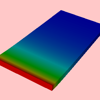
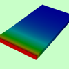
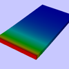
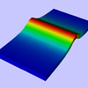
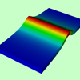
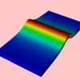

| Test Case | Errors | Images | |||
| %Diffs | Maximum | Baseline | Current | Diff Map | |
| Make sure we get a time slider when locking a window causes the most suitable correlation to be altered. | |||||
| timelock_00 | 0.00 | 0.00 |  | ||
| timelock_01 | 0 modifications totalling 0 lines | ||||
| timelock_02 | 0.00 | 0.00 |  | ||
| timelock_03 | 0 modifications totalling 0 lines | ||||
| timelock_04 | 0.00 | 0.00 |  | ||
| timelock_05 | 0 modifications totalling 0 lines | ||||
| timelock_06 | 0 modifications totalling 0 lines | ||||
| timelock_07 | 0 modifications totalling 0 lines | ||||
| timelock_08 | 0.00 | 0.00 |  | ||
| timelock_09 | 0 modifications totalling 0 lines | ||||
| timelock_10 | 0.00 | 0.00 |  | ||
| timelock_11 | 0 modifications totalling 0 lines | ||||
| timelock_12 | 0.00 | 0.00 |  | ||
| timelock_13 | 0 modifications totalling 0 lines | ||||
| Test that the time slider works when time locking multiple windows | |||||
| timelock_14 | 0.00 | 0.00 | |||
| timelock_15 | 0 modifications totalling 0 lines | ||||
| timelock_16 | 0.00 | 0.00 | |||
{kind=link}
{kind=link}
{kind=link}
{kind=link}
{kind=link}
{kind=link}
{kind=link}
{kind=link}